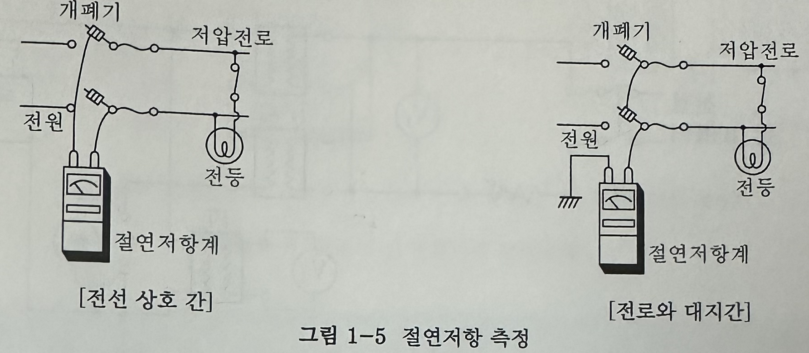
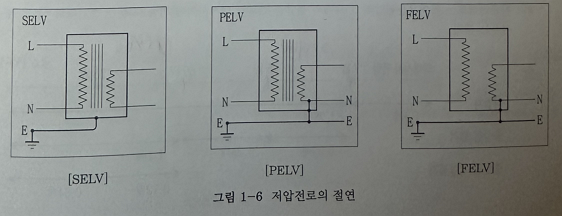

2. 전로의 절연저항 측정 및 절연내력 시험
가. 저압 전로의 절연저항
1) 정전이 어려운 경우 등 절연저항 측정이 곤란한 경우에는 저항성분의 누설전류가 1mA 이하이면 그 전로의 절연성능은 적합한 것으로 본다.
[그림 1-5 절연저항 측정]

2) 저압전로의 절연 성능 (기술기준 제52조)
전기사용장소의 사용전압이 저압인 전로의 전선 상호 간 및 전로와 대지 사이의 절연저항은 개폐기 또는 과전류차단기로 쉽게 구분할 수 있는 전로마다 다음 표에서 정한 값 이상이어야 한다. 다만 전선 상호 간의 절연저항은 기기기구를 쉽게 분리가 곤란한 분기회로의 경우 기기 접속 전에 측정할 수 있다.
또한, 측정 시 영향을 주거나 손상을 받을 수 있는 SPD 등은 측정 전에 분리시켜야 하고, 부득이하게 분리가 어려운 경우에는 시험 전압을 250V DC로 낮추어 측정할 수 있지만 절연저항 값은 1MΩ 이상이어야 한다.
저압전로에서 절연이 잘 되어 있다고 판단하는 기준
| 전로의 사용전압 (V) | DC 시험전압 (V) | 절연저항 (MΩ) |
|---|---|---|
| SELV 및 PELV | 250 | 0.5 |
| FELV를 포함한 500V 이하 | 500 | 1.0 |
| 500V 초과 | 1000 |
<삭제> '25.06.04 전기설비기술기준 일부 개정 : [주]내용 삭제됨.
[그림 1-6 저압전로의 절연]

나. 고압 및 특고압의 전로
아래의 표에서 정한 시험전압을 전로와 대지 사이(다심케이블은 심선 상호 간 및 심선과 대지 사이)에 연속하여 10분간 가하여 절연내력을 시험하였을 때 이에 견디어야 한다. (케이블을 사용하는 경우 직류로 시험할 수 있으며, 시험전압은 교류 경우의 2배)
[그림 1-7 절연 내력 시험]
전원, 변압기(Tr×2), PT, MA, 피시험기기 회로 구성도
[최대사용전압 및 시험전압]
| 최대사용전압 | 시험전압 | 최저시험전압 |
|---|---|---|
| 1. 7kV 이하인 전로 | 1.5배 | - |
| 2. 7kV 초과 25kV 이하인 중성점 접지식 전로 (중성선 다중 접지식) | 0.92배 | - |
| 3. 7kV 초과 60kV 이하인 전로 (2란 제외) | 1.25배 | 10.5kV |
| 4. 60kV 초과 중성점 비접지식 전로 | 1.25배 | - |
| 5. 60kV 초과 중성점 접지식 전로 (6, 7란 제외) | 1.1배 | 75kV |
| 6. 60kV 초과 중성점 직접접지식 전로 (7란 제외) | 0.72배 | #1 |
| 7. 170kV 초과 중성점 직접접지식 전로 중 중성점이 직접접지되어 있는 발전소 또는 변전소 | 0.64배 | #2 |
| 8. 60kV 초과 정류기에 접속되고 있는 전로 | 1.1배 | - |
#1. 전력케이블은 정격전압을 24시간 가하여 절연내력시험하였을 때 이에 견딜 경우는 제외
#2. 지중전선로는 최대사용전압의 0.64배의 전압을 전로와 대지사이에 연속 60분간 절연내력시험을 했을때 견디는 경우는 제외